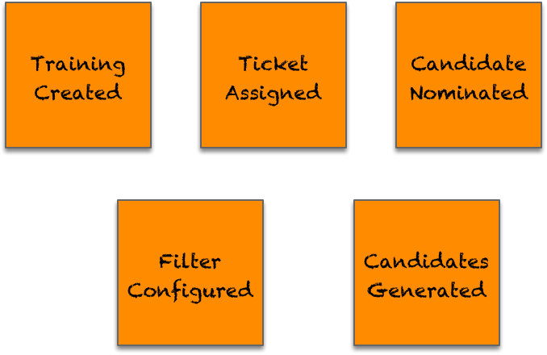
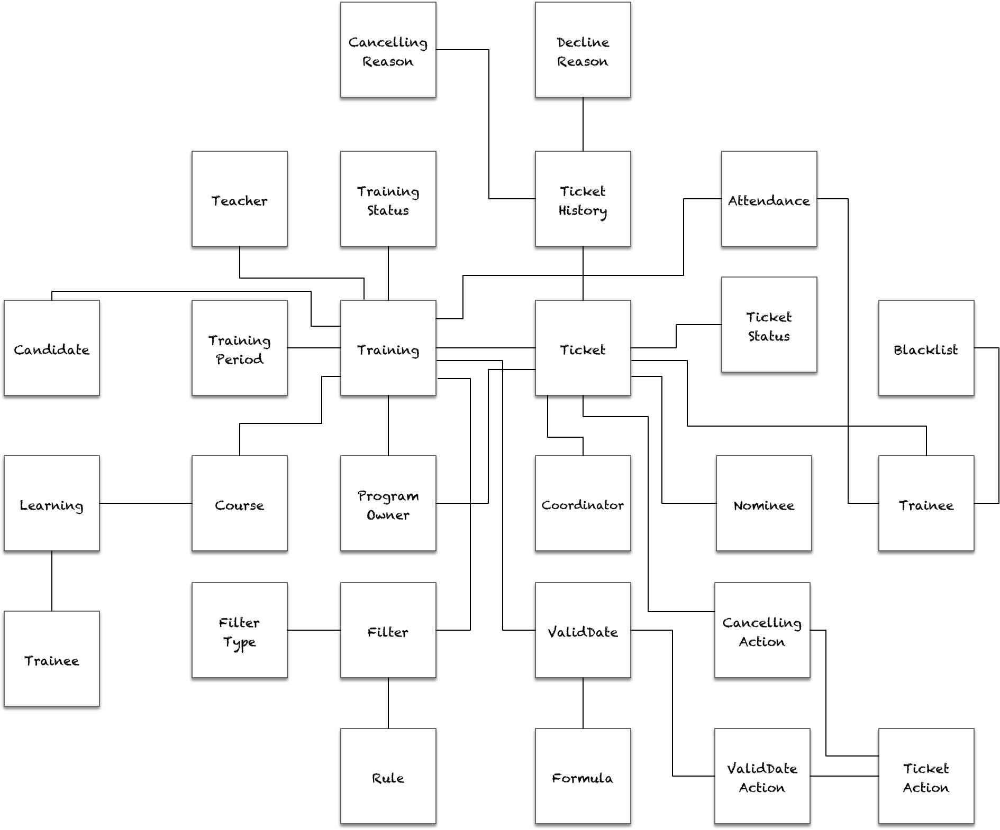

- 001 「战略篇」访谈 DDD 和微服务是什么关系？.md
- 002 「战略篇」开篇词：领域驱动设计，重焕青春的设计经典.md
- 003 领域驱动设计概览.md
- 004 深入分析软件的复杂度.md
- 005 控制软件复杂度的原则.md
- 006 领域驱动设计对软件复杂度的应对（上）.md
- 007 领域驱动设计对软件复杂度的应对（下）.md
- 008 软件开发团队的沟通与协作.md
- 009 运用领域场景分析提炼领域知识（上）.md
- 010 运用领域场景分析提炼领域知识（下）.md
- 011 建立统一语言.md
- 012 理解限界上下文.md
- 013 限界上下文的控制力（上）.md
- 014 限界上下文的控制力（下）.md
- 015 识别限界上下文（上）.md
- 016 识别限界上下文（下）.md
- 017 理解上下文映射.md
- 018 上下文映射的团队协作模式.md
- 019 上下文映射的通信集成模式.md
- 020 辨别限界上下文的协作关系（上）.md
- 021 辨别限界上下文的协作关系（下）.md
- 022 认识分层架构.md
- 023 分层架构的演化.md
- 024 领域驱动架构的演进.md
- 025 案例 层次的职责与协作关系（图文篇）.md
- 026 限界上下文与架构.md
- 027 限界上下文对架构的影响.md
- 028 领域驱动设计的代码模型.md
- 029 代码模型的架构决策.md
- 030 实践 先启阶段的需求分析.md
- 031 实践 先启阶段的领域场景分析（上）.md
- 032 实践 先启阶段的领域场景分析（下）.md
- 033 实践 识别限界上下文.md
- 034 实践 确定限界上下文的协作关系.md
- 035 实践 EAS 的整体架构.md
- 036 「战术篇」访谈：DDD 能帮开发团队提高设计水平吗？.md
- 037 「战术篇」开篇词：领域驱动设计的不确定性.md
- 038 什么是模型.md
- 039 数据分析模型.md
- 040 数据设计模型.md
- 041 数据模型与对象模型.md
- 042 数据实现模型.md
- 043 案例 培训管理系统.md
- 044 服务资源模型.md
- 045 服务行为模型.md
- 046 服务设计模型.md
- 047 领域模型驱动设计.md
- 048 领域实现模型.md
- 049 理解领域模型.md
- 050 领域模型与结构范式.md
- 051 领域模型与对象范式（上）.md
- 052 领域模型与对象范式（中）.md
- 053 领域模型与对象范式（下）.md
- 054 领域模型与函数范式.md
- 055 领域驱动分层架构与对象模型.md
- 056 统一语言与领域分析模型.md
- 057 精炼领域分析模型.md
- 058 彩色 UML 与彩色建模.md
- 059 四色建模法.md
- 060 案例 订单核心流程的四色建模.md
- 061 事件风暴与业务全景探索.md
- 062 事件风暴与领域分析建模.md
- 063 案例 订单核心流程的事件风暴.md
- 064 表达领域设计模型.md
- 065 实体.md
- 066 值对象.md
- 067 对象图与聚合.md
- 068 聚合设计原则.md
- 069 聚合之间的关系.md
- 070 聚合的设计过程.md
- 071 案例 培训领域模型的聚合设计.md
- 072 领域模型对象的生命周期-工厂.md
- 073 领域模型对象的生命周期-资源库.md
- 074 领域服务.md
- 075 案例 领域设计模型的价值.md
- 076 应用服务.md
- 077 场景的设计驱动力.md
- 078 案例 薪资管理系统的场景驱动设计.md
- 079 场景驱动设计与 DCI 模式.md
- 080 领域事件.md
- 081 发布者—订阅者模式.md
- 082 事件溯源模式.md
- 083 测试优先的领域实现建模.md
- 084 深入理解简单设计.md
- 085 案例 薪资管理系统的测试驱动开发（上）.md
- 086 案例 薪资管理系统的测试驱动开发（下）.md
- 087 对象关系映射（上）.md
- 088 对象关系映射（下）.md
- 089 领域模型与数据模型.md
- 090 领域驱动设计对持久化的影响.md
- 091 领域驱动设计体系.md
- 092 子领域与限界上下文.md
- 093 限界上下文的边界与协作.md
- 094 限界上下文之间的分布式通信.md
- 095 命令查询职责分离.md
- 096 分布式柔性事务.md
- 097 设计概念的统一语言.md
- 098 模型对象.md
- 099 领域驱动设计参考过程模型.md
- 100 领域驱动设计的精髓.md
- 101 实践 员工上下文的领域建模.md
- 102 实践 考勤上下文的领域建模.md
- 103 实践 项目上下文的领域建模.md
- 104 实践 培训上下文的业务需求.md
- 105 实践 培训上下文的领域分析建模.md
- 106 实践 培训上下文的领域设计建模.md
- 107 实践 培训上下文的领域实现建模.md
- 108 实践 EAS 系统的代码模型.md
- 109 后记：如何学习领域驱动设计.md
105 实践 培训上下文的领域分析建模
培训上下文具有一定的独立性，从创建培训计划到分配票、提名与培训形成了非常清晰的业务流程，取消票的流程作为核心领域逻辑也需要进行深入细致地分析建模，因此我采用了事件风暴对其进行领域分析建模。
识别事件
事件风暴的关键在于识别事件。遵循一条隐含的时间轴，我们寻找领域专家最为关心的一个关键事件，那就是“员工被提名（Employee Nominated）”事件。遵循统一语言的要求，被提名参加培训的员工被称之为“候选人（Candidate）”，因此该事件更准确的描述应为“候选人被提名（Candidate Nominated）”。现在，在墙面上贴下第一个关键领域事件，并以橙色即时贴表示：
有了第一个核心领域事件，我们就可以分别按照向前向后的事件驱动力顺序识别领域事件。在识别领域事件时，要注意结合业务流程，遵循统一语言的定义，并根据领域事件的特征确定识别出来的是否领域事件。
由右向左的逆向推动
这个方向其实就是逆向地从果推向因。分析培训的业务流程，一名员工若要获得提名，其前提条件是部门协调者获得票，对应的领域事件为 TicketAssignedToCoordinator。根据处理票的统一语言，培训专员或部门协调者分配票给协调者，称之为“分配（Assignment）”，协调者分配票给参加培训的员工，称之为“提名（Nomination）”。这里属于分配的语义，该领域事件可以简化为 TicketAssigned。
从流程看，培训专员在分配票给协调者之前，需要设置过滤器。设置过滤器的目的是为了快速高效地获得候选人名单，本质上并非分配票操作的前置条件，可以认为“过滤器已配置（FilterConfigured）”是一个单独的事件。这也正好体现了业务流程与事件风暴的不同之处。协调人要获得票，首先需要有培训票。这个所谓的“票”其实就是培训名额，因此票被分配的前提是培训已经被创建，由此可以获得前置事件“培训已创建（TrainingCreated）”。该事件其实是培训上下文启动培训流程的起点。由此可以依次获得如下领域事件：

由左向右的正向推动
正向推动的思考方向是从起因推结果，即分析当前领域事件发生后，会产生什么样的结果？这一思考方向相较于逆向推动更为容易。不过，正向逆向两个方向的驱动力实则可互为补充，让识别领域事件的过程更加严谨而周密，因而不可偏废。从 CandidateNominated 事件开始，整个过程围绕着“票（Ticket）”推进、迁移和变化，票状态的迁移恰好与触发领域事件相对应，算是识别领域事件的一个助力。
对候选人提名之后，系统会等待候选人的确认，这会带来三个不同的分支，由此产生三个不同的领域事件：票已注册（TicketEnrolled）、票已拒绝（TicketDeclined）与截止日期已匹配（DeadlineMatched）。其中，被拒绝的票会被培训专员重新分配，这相当于重复进入提名的流程。既然事件流已经表达了提名过程中触发的领域事件，到该领域事件之后就无需重复重新提名的过程。若在探索业务全景阶段，当我们按照时间轴规范了领域事件的顺序之后，可以用箭头来表示关键事件发布后的后续流程，例如将TicketDeclined指向 CandidateNominated 事件。领域分析建模阶段的目的是通过事件风暴寻找领域概念，流程只是辅助我们判断识别出来的领域事件是否存在疏漏，仅此而已。
在提名候选人之后，培训票相当于已被占用。取决于不同的状态，不同的角色都可以在适当时间取消票，产生 TicketCancelled 事件。票的取消固然发生在提名之后，但它的流程却是相对独立的，因此可以为其单独建立一个事件流，并用热点（HotSpot）标记该事件发生在 CandidateNominated 事件之后。如果是候选人自己取消票，由于业务规则不允许候选人直接取消票，需要通过审批，故而可以认为是一次取消申请，产生的事件为 CancellationApplied。
如果票最终确认并满足培训开始时间，即进入培训阶段的培训管理流程。这个流程从培训已开始（TrainingStarted）事件起，从培训已结束（TrainingEnded）止，期间牵涉到对培训、学员以及票的相关领域事件。参加培训的每位学员都要进行考勤，培训完毕后，会关闭培训票，对应的领域事件依次为 TraineeAttended 和 TicketClosed。对于学员与票而言，还牵涉到一个分支流程，就是学员未能出席此次培训，需要记录为缺勤，并加入到黑名单，票作废，对应的领域事件为 TraineeNotShown、TraineeAddedToBlacklist 和 TicketLost。
结合业务流程与票的状态图，从 CandidateNominated 事件开始，可以获得如下事件流：

在更改票状态的领域事件上标记了一个热点，要求保存每次票变更的历史记录。如果不标记该热点，就会丢失这一重要的需求信息，同时，又不必为票每次发生票状态变更的事件都添加“票历史记录已创建（TicketHistoryCreated）”领域事件。
识别参与者
在识别事件之后，我们应该按照时间轴的顺序根据业务流程梳理这些事件，以判断是否存在缺失事件或错误事件。为每个事件识别参与者，既可以明确是谁触发了事件，进一步确定事件与事件之间的因果关系，又可以结合参与者与场景完成对事件的梳理。
领域事件一共有四种参与者（Actor）：
- 角色（Role）：触发事件的人
- 策略（Policy）：触发事件的规则，通常是随着时间的推移，满足规则要求的时间条件后会自动触发事件
- 外部系统（External System）：由当前系统外的其他系统触发事件
- 事件（Event）：由当前事件的前置事件直接触发，在事件风暴中无需表示
培训上下文事件流识别出来的参与者及其对应领域事件如下所示：

DeadlineMatched 领域事件会在培训专员设置的截止日期到达时触发，故而它的参与者是一个策略。这个策略对应的时间规则是截止日期，它是由培训专员配置的，我们应增加一个 ValidDateConfigured 领域事件。培训专员或协调者在取消票时，培训票可能会根据事先设定的活动（Action）对票进行处理，若活动为 LostAction，票就会作废，产生 TicketLost 领域事件。对活动的配置也是之前识别事件时未考虑到的，需要增加一个 TicketActionConfigured 领域事件。
整个培训上下文没有与外部系统发生任何协作，故而没有外部系统参与者参与到整个事件流。
领域分析建模
围绕着领域事件，分别驱动出决策命令、写模型（Alberto Brandolini将其称为聚合，为了避免与领域设计模型中的聚合混淆，且领域事件通常会改变目标对象的状态，故而称为写模型，与读模型相对）和读模型。写模型与读模型共同组成了领域分析模型。
从 TrainingCreated 领域事件到 TicketConfirm 领域事件进行分析建模的结果如下所示：
参与者、决策命令与领域事件共同组成一个领域场景，参与者在执行决策命令时，需要提供必要的读模型（Read Model）才能完成对写模型（Write Model）状态的修改，从而发布领域事件。以 TrainingCreated 领域事件为例，培训专员（PO）要创建一个培训，需要提供培训起止日期、培训状态、课程与教师的信息，才能创建一个信息完整的培训对象。培训对象是从无到有创建出来，是改变了状态的写模型，其余对象为创建培训决策命令需要的读模型。
在对 TicketActionConfigured 领域事件进行领域分析建模时，事件对应了两个不同的决策命令：
- 配置有效日期时设置的 TicketAction
- 分配票时设置取消时的 TicketAction
这两个决策命令产生的领域事件看似相同，实则会产生不同的活动，这意味着需要发布不同的领域事件：

与取消票相关的领域事件操作的皆为Ticket写模型，对它们进行分析建模的结果如下所示：

对从培训开始到结束的领域事件进行分析建模的结果如下所示：

领域分析建模阶段的关键是识别领域概念，为限界上下文的领域建立抽象模型。培训上下文的领域事件处于同一个限界上下文，因而只需要考虑该上下文内部领域模型之间的关系。由此可以获得如下领域分析模型：

事件风暴识别出来的写模型与读模型共同组成了领域分析模型。在上图所示的领域分析模型中，还增加了一个之前未识别出来的 TicketHistory 领域类，它是通过标记的热点识别出来的，用以记录每次票状态的变更历史。
领域分析模型并非一成不变，它仅仅代表当前阶段分析建模的产出。随着需求的变化，该分析模型还会随之调整，在进入到领域设计建模与领域实现建模阶段后，也需要随时保证领域分析模型与领域设计模型、领域实现模型的同步。
当前的领域分析模型是一个典型的对象图，领域模型对象之间的关系错综复杂，它们在不同的领域场景中扮演了不同的角色，履行着各自的职责，这些信息在领域分析模型中都无法清晰地呈现出来。因此，需要给这一模型添加设计约束，明确每个领域模型的角色构造型，并根据领域场景确定它们之间的协作顺序，为编码实现提供更为清晰地指导。